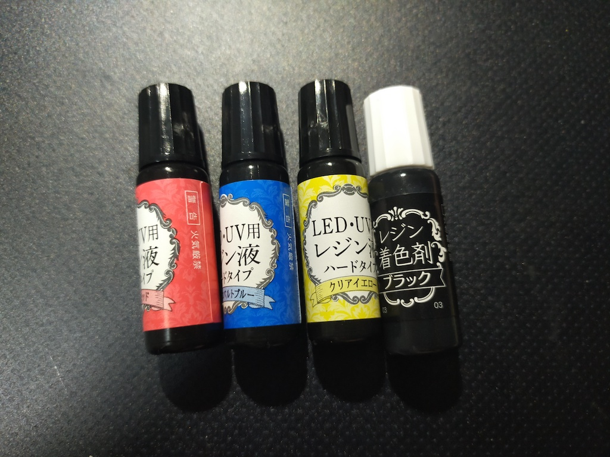
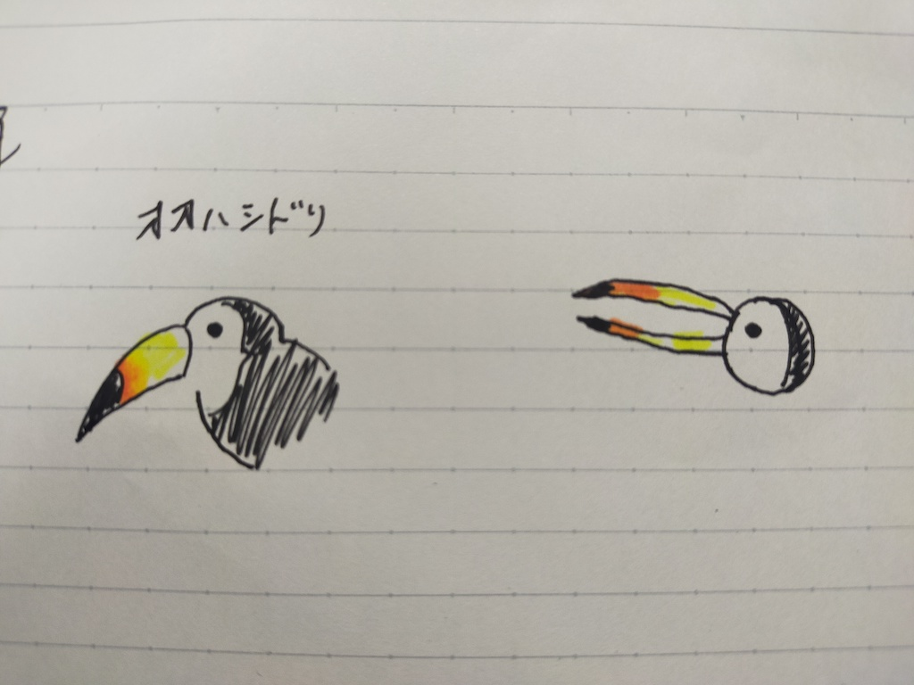
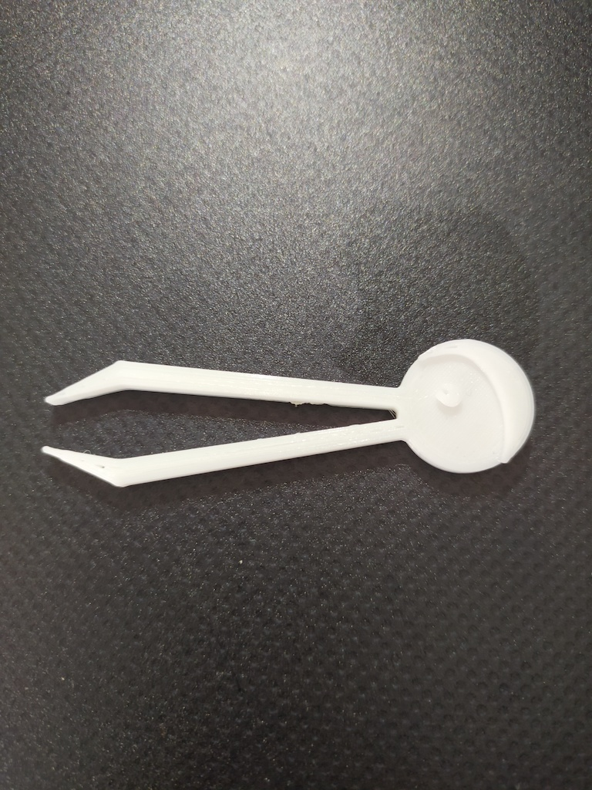
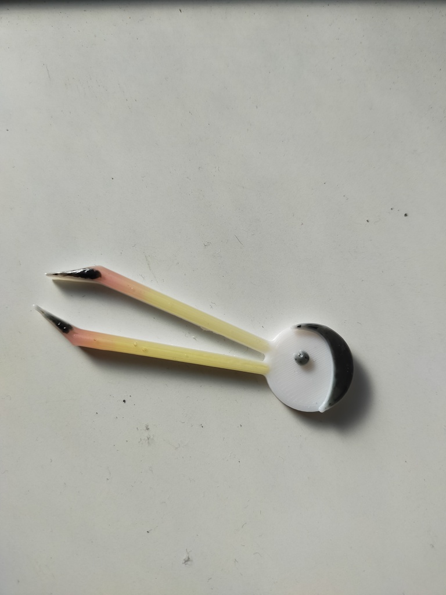
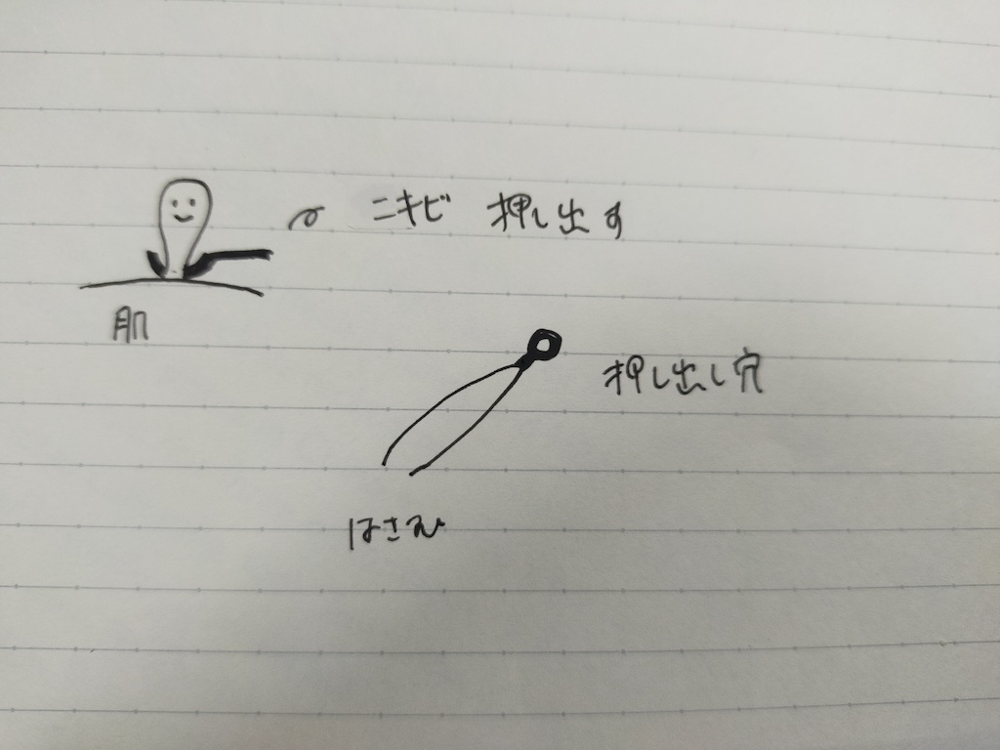
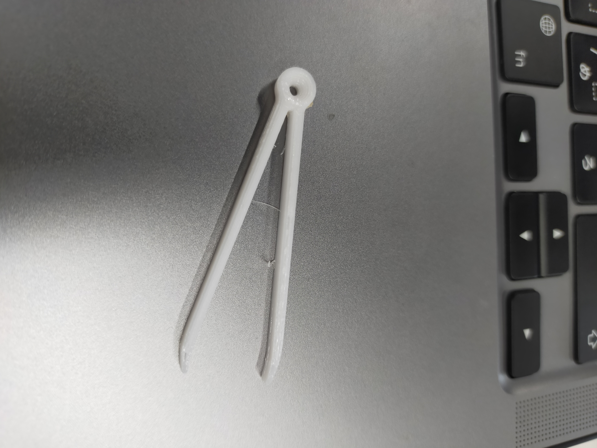
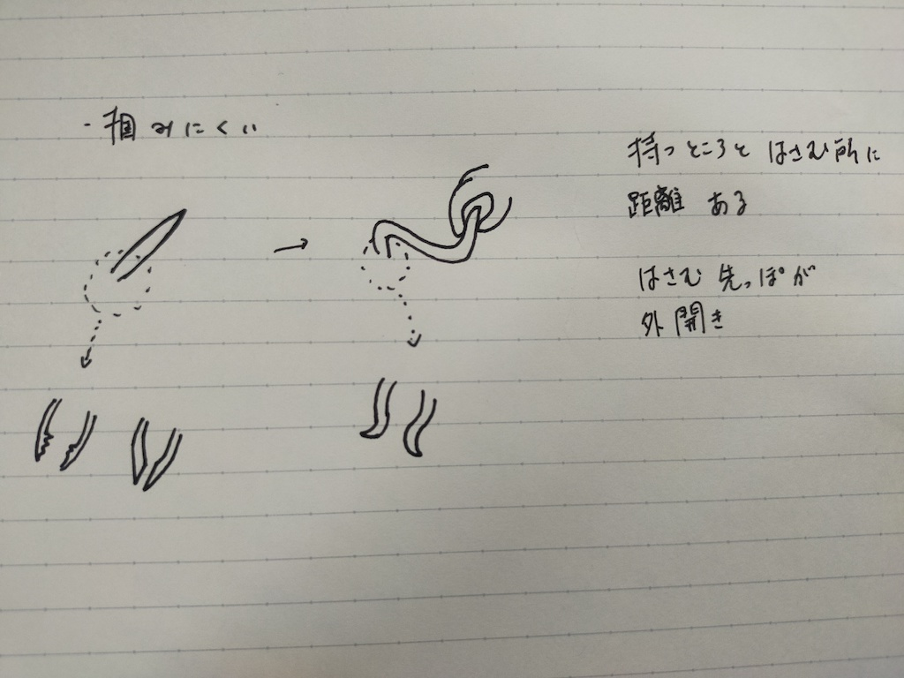
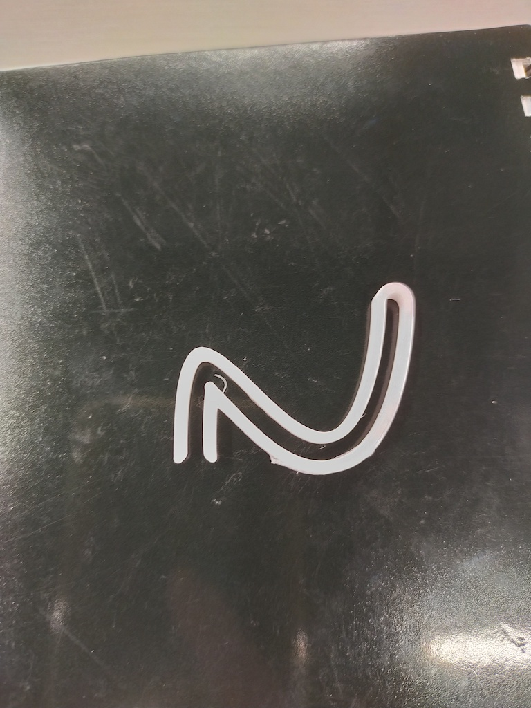

作品１ 鳥型ピンセット
作品の説明
使うときに楽しくなるような、可愛いピンセットがあればいいと思った。
ふと鳥のクチバシの形状がピンセットとリンクしたため、クチバシが特徴のオオハシをモチーフにしたピンセットを作った。
３Dプリンターで出力しただけでは何だかわからなくなったので、着色することにした。
（2021/10/10）キャンドゥでアクリル絵の具見つからず、UVレジン（赤、青、黄３色＋黒のレジン着色料）を購入。日光に30分晒し硬化させる。
参考：購入したUVレジン↓

[イラストメモ]

[出力したもの]（左：着色前 右：着色後）


作品２ ニキビ圧出ピンセット
作品の説明
YouTubeでニキビ圧出器を使っているのを見て、ピンセットと組み合わせれば１つの道具で事足りるのに
と思った。
ピンセットの後ろに通常のニキビ圧出器のスプーンのようなパーツを組み合わせてみた。
[イラストメモ]

[出力したもの]）

作品3 掴みづらいピンセット
作品の説明
ピンセットは「何かを掴むためのもの」であるが、発想を転換して「掴みづらいピンセット」があってもいいのではと思った。
ピンセットを曲げて、指で摘む部分と物を掴む部分に距離を出したり、物を掴む先端部を外側に丸めたりして
なるべくものを掴めないようにした。試作した際、指で摘むと先端部がずれる（両先端がぴったりくっつかない）ことが判明したが、
掴みづらさに拍車がかかったのでそのままにした。
[イラストメモ]

[出力したもの]

作成したSTLファイル：
こちらからダウンロード
前の画面に戻る